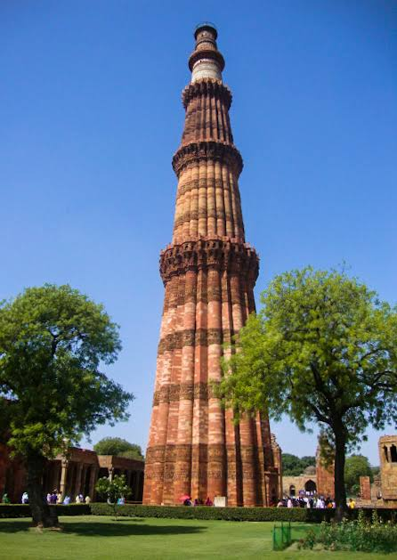
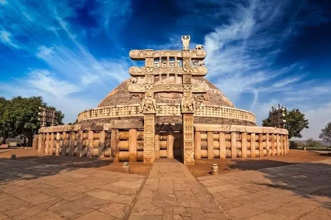

Red Fort
One of the historical tourist places in India, the Red Fort was constructed over ten years from 1638 to 1648. This fort was constructed when Shah Jahan shifted the capital from Agra to Delhi and it was then known as the Qila-e-Mubarak. This octagonal fort is one of the most famous historical places in north India and is also the site where the President gives his speech on Independence Day. The Red fort is truly remarkable and one of the best historical places in India.

Qutub Minar
Regarded as the site of the first Muslim kingdom in northern India, the Qutub Minar is definitely one of the most historical sites in India. It is one of the finest examples of Indo-Muslim architecture with its intricate red sandstone storeys. These are dotted with carvings and verses from the Quran and are mostly in Arabic and Nagari..

Hawa Mahal
The ‘Palace of Winds’ or Hawa Mahal gets its name due to the fact that it looks like a honeycomb of a beehive with its 953 intricate windows. It is also shaped like a crown as the ruler who built it, Maharaja Sawai Pratap Singh, was a major devotee of Lord Krishna. One of the popular tourist places in Jaipur, this palace is known as the tallest building in the world that doesn’t have any foundation. The palace is curved but still stands firm due to its pyramidal shape.

Sanchi Stupa
Unearth one of the most religious centers of Buddhism at the Sanchi Stupa that houses relics of the Buddha. This famous historical place in India was built by Lord Asoka in the 3rd century B.C for Emperor Ashoka. The Dome of the Stupa signifies the wheel of law and this stupa is actually considered as a symbol of Buddha’s freedom the circle of life and death (Moksha). The four gateways of the Stupa have various scenes from the Jataka tales and stories of Buddha’s life.
